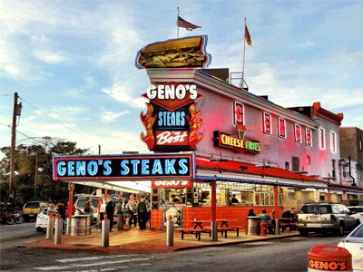
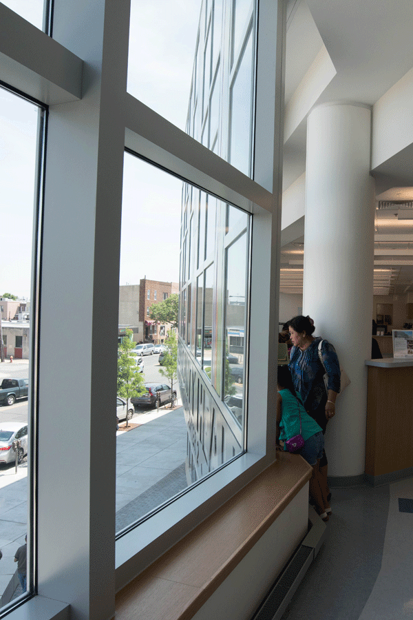
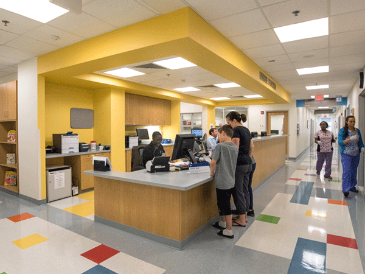
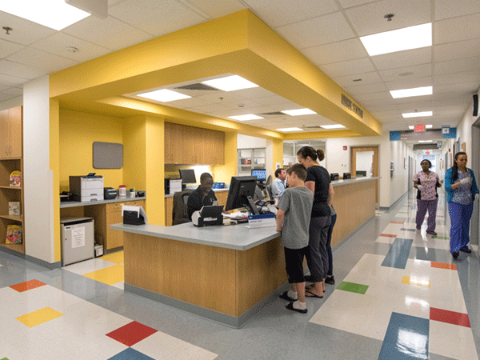

South Philadelphia Family Care Center
Multipurpose health clinic to foster community interactivity & overall wellness.
- Type: Civic, Healthcare, Professional Work
- Date: Summer 2013 - Summer 2016
- Location: Philadelphia, Pennsylvania, USA |South Broad Street District
- Size: 96,000 sf (9,300 sqm) gross | 22,000 sf (2,050 sqm) playground
- Role: Project Architect
- Team: Dan McCoubrey (Principal), Seth Cohen (Project Manager)
The Children’s Hospital of Philadelphia, a world leader in pediatric care, partnered with the City of Philadelphia in order to develop a combined center that can better serve the neighborhood of South Philadelphia. The site on Broad Street formerly housed a city health clinic, a branch library, and a youth recreation center with a playground. The combination of these varied programmatic elements into one building creates a vital hub for the area residents. Coordination of the multiple parties involved as well as the combination of diverse programmatic & functional requirements was a complex architectural challenge through all project phases with extensive coordination required between the multiple users, consultants, and the contractor. The project was completed and opened in Summer of 2016.
Building organization & functions

Site Context of South Philadelphia
Design Process - Building massing, materials mock-ups, documentation

Main Elevation at Broad Street and Castle Avenue design rendering
Free Library of Philadelphia design rendering

Demolition of existing Health Center and Library buildings on the site for the new building
Erection of steel structure
Main entry elevation construction progress
Library interior construction progress
Main entry & lobby construction progress
Curtainwall and sign band installation

Completed images of common entry lobby and waiting areas
Completed images of community playground and public library
 

Completed images of CHOP examination rooms and check-in areas